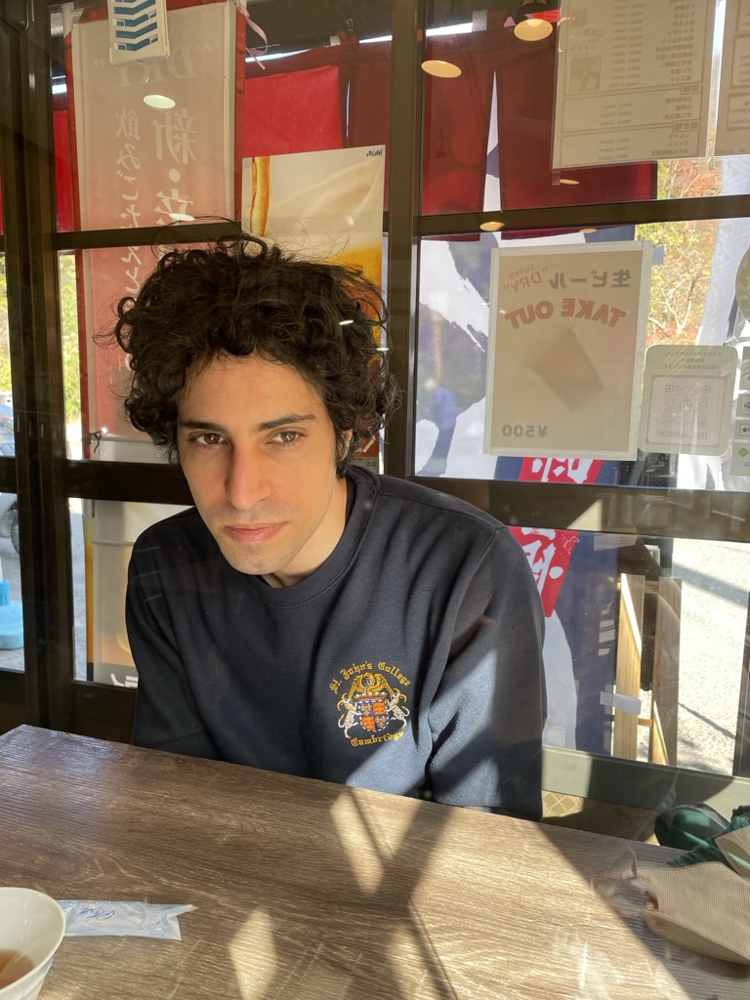

I am a postdoctoral researcher at the NII (国立情報学研究所).
Research focus: logic and foundations of mathematics, theory of computation, algorithms.
Academic interests: mathematical logic, category theory, dynamical systems, topology, algebraic topology, finite model theory, graph theory.
論理学・数学基礎論・計算理論の研究。
News · お知らせ
Awarded the JST ACT-X research grant (2024–2027) for the project:『AIにおける対称性：次世代AIのための組合せ位相的方法』
During the academic year 2022/23, I was affiliated with The Alan Turing Institute as an Enrichment Student working on a research project related to logic and dynamical systems.
Research grants · 競争的資金
- JST ACT-X, 2024–2027.『AIにおける対称性：次世代AIのための組合せ位相的方法』
- Alan Turing Instutite, 2022–2023.
“Logic of Space and Time”
Preprints · プレプリント
-
Game Comonads for Modal Logics.
-
Completeness of Dynamic Topological Logic for Scattered Spaces.
-
Hybrid Logic with Empty Names.
Conference publications · 国際会議論文
-
2026
A Coalgebraic Dijkstra Algorithm.CONCUR 2026 · 37th International Conference on Concurrency Theory · arXiv
-
2026
Halo Semantics for Modal Logic.AiML 2026 · 16th International Conference on Advances in Modal Logic · Proceedings
-
2026
Modulation-Reaction Networks.CMSB 2026 · 24th International Conference on Computational Methods in Systems Biology · arXiv
-
2026
Monads and Distributive Laws in Substructural Contexts.
-
2026
Hybrid Spatiotemporal Logic for Automotive Applications: Modeling and Model-Checking.
-
2024
Concurrent Games over Relational Structures: The Origin of Game Comonads.
-
2024
Linear Arboreal Categories.MFPS 2024 · 40th Conference on Mathematical Foundations of Programming Semantics · Proceedings · arXiv
-
2024
Dynamic Tangled Derivative Logic of Metric Spaces.
-
2023
Untangled: A Complete Dynamic Topological Logic.
- 2022
-
2022
The Pebble-Relation Comonad in Finite Model Theory.
-
2022
Dynamic Cantor Derivative Logic.
Journal publications · 学術雑誌論文
Books · 著作
-
From game comonads to dynamical systems: property-preserving maps as a logical unifying principle.
Selected talks · 講演
- IMLA 2026 – Coderivative intuitionistic logics of topological and bimetric spaces (ISCTE).
- SmP 2026 – Game Comonads and Coalgebras (ISCTE).
- AiML 2026 – Halo Semantics for Modal Logic (University of Amsterdam).
- RiC 2026 – Games, Coalgebras, and Resources (University College London).
- Invited talk – Reasoning about dynamical systems: from completeness to verification (Institute of Science Tokyo).
- Invited talk – The logic of space and time (University of Oxford).
- Invited talk – The logic of space and time (University College London).
- Invited talk – Towards a Decidable Logic of Dynamical Systems (Tohoku University).
- LC 2025 – Expressivity meets decidability in spatiotemporal logics (TU Wien).
- 若手数学者交流会 – 計算における位相的対称性 (AP市ヶ谷).
- CSCAT 2025 – 有限モデル理論における圏論的手法 (崇城大学).
- PPL 2025 – 関係構造上の並行ゲーム (ホテル明山荘).
- LICS 2024 – Concurrent Games over Relational Structures (Taltech).
- PPL 2024 – Untangled: A Complete Dynamic Topological Logic (Toki Messe).
- AAAI 2024 – Dynamic Tangled Derivative Logic of Metric Spaces (Vancouver Convention Center).
- Invited talk – Categorical Combinatorics and Topology (National Institute of Informatics).
- Coresources 2023 – Computational Complexity and Model Comparison Games (University of Cambridge).
- Invited talk – Logic and Dynamical Systems (University of Warsaw).
- Invited talk – Generalising Model Comparison Games (University of Edinburgh).
- AAAI 2023 – Untangled: A Complete Dynamic Topological Logic (Walter E. Washington Convention Center).
- Invited talk – Game Comonads and Categorically Motivated Combinatorics (Kyoto University).
- RiC 2022 – Everything Everywhere All in One (UCL).
- AiML 2022 – Cantor Derivative Logic in Topological Dynamics (IRISA).
- LICS 2022 – The Pebble-Relation Comonad in Finite Model Theory (Technion).
- Invited talk – Comonads in the Playground of Finite Models (University of East Anglia).
- BCTCS 2022 – The Path of Hidden Pebbles (Swansea University).
- CSL 2022 – Dynamic Cantor Derivative Logic (University of Göttingen) (Online).
- NLPIR 2019 – Location and Category Detection in Twitter (Tokushima University).
Academic service · 学会活動
Academic visits · 研究滞在
- University of Milan (June 2026).
- University of Cambridge, University College London and University of Oxford (December 2025).
- 東北大学 (October 2025).
- 鹿児島大学 (March 2025).
- 国立情報学研究所 (NII), Tokyo (Fall 2023).
- University of Warsaw (April 2023).
- University of Kyoto (December 2022).
Professional memberships · 所属学会
- Fellow of the Cambridge Philosophical Society. Since 2021.
- Member of the Association for Computing Machinery (ACM). Since 2022.
- Member of 日本数学会 (Mathematical Society of Japan). Since 2026.
Supervising · 研究指導
- 2025/26: Model Checking for Coalgebraic μ-Calculus.
Part II Project (undergraduate dissertation), Computer Science, University of Cambridge. - 2024/25: Generalised Sokoban Algorithms.
Part II Project (undergraduate dissertation), Computer Science, University of Cambridge. - 2023/24: Randomised Matching Algorithms.
Part II Project (undergraduate dissertation), Computer Science, University of Cambridge. - 2022/23: Interdimensional Logic in Combinatorial Algebraic Topology.
Undergraduate dissertation, visiting student, Scuola Superiore IUSS. - 2022/23: Implementing and analysing Bulatov-Dalmau's algorithm for CSPs with Mal'tsev constraints.
Part II Project (undergraduate dissertation), Computer Science, University of Cambridge. - 2021/22: Geometric Representations of Hom-Complexes.
Part II Project (undergraduate dissertation), Computer Science, University of Cambridge.
Teaching · 教育
- Spring 2026: Guest Lecturer in Mathematical Structures in Formal Methods (MSc, Computer Science, NII).
- Easter 2024: Supervisor in Artificial Intelligence (Part IB, Computer Science, University of Cambridge).
- Michaelmas 2023: Supervisor in Denotational Semantics (Part II, Computer Science, University of Cambridge).
- Easter 2023: Supervisor in Hoare Logic and Model Checking (Part II, Computer Science, University of Cambridge).
- Lent 2023: Supervisor in Computation Theory (Part IB, Computer Science, University of Cambridge).
- Michaelmas 2022: Demonstrator in Category Theory (MPhil ACS/Part III, Computer Science, University of Cambridge).
- Easter 2022: Supervisor in Complexity Theory (Part IB, Computer Science, University of Cambridge).
- Lent 2022: Supervisor in Logic and Proof (Part IB, Computer Science, University of Cambridge).
- Lent 2022: Supervisor in Quantum Computing (Part II, Computer Science, University of Cambridge).
- Michaelmas 2021: Supervisor in Algebraic Topology (Part II, Mathematical Tripos, University of Cambridge).
- Easter 2021: Supervisor in Complexity Theory (Part IB, Computer Science, University of Cambridge).
- Lent 2021: Supervisor in Logic and Proof (Part IB, Computer Science, University of Cambridge).
- Spring 2020: TA in Topology, Logic and Learning (MSc in Logic, University of Amsterdam).
Contact · 連絡先
Contact information
E-mail: lastname at nii.ac.jp